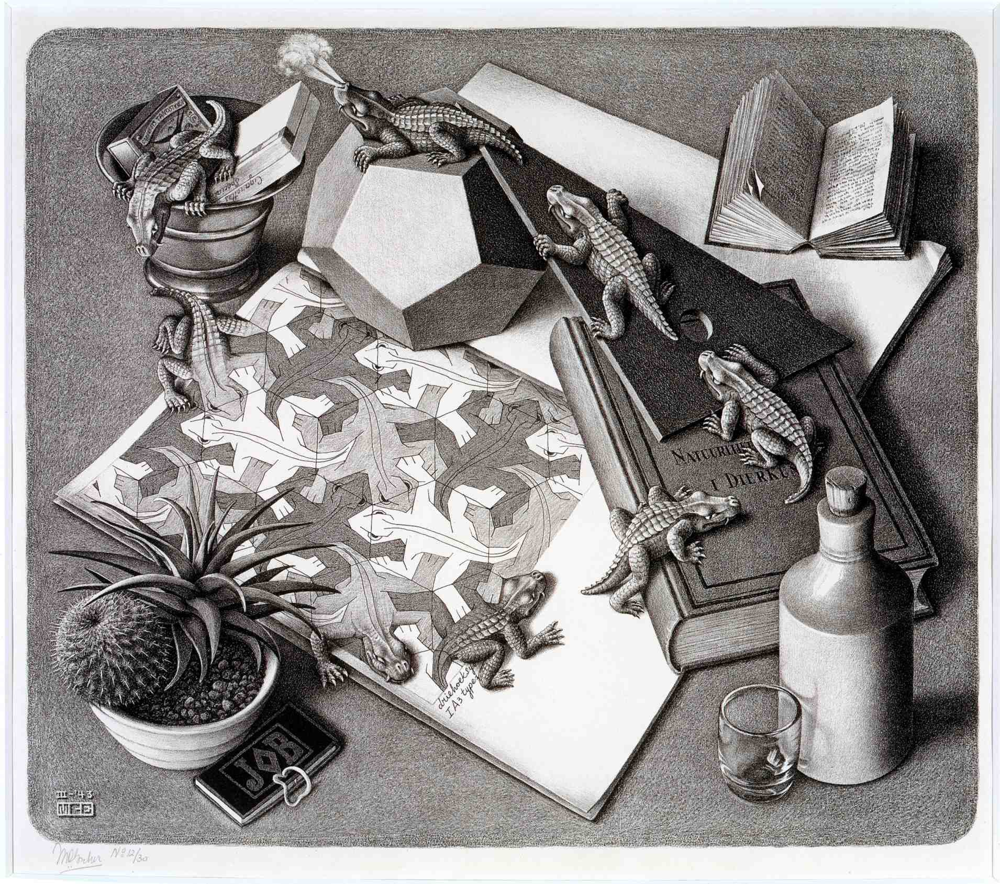

Antiguas Tecnologías
En esta sección, trataremos ciertos aspectos en los que se ha producido un gran avance y afectan de mayor o menor modo a la educación en su conjunto, como pueden ser la comunicación de los alumnos con el profesor, los métodos de búsqueda o incluso los exámenes.
Para comprender y evaluar ese desarrollo, primero debemos mencionar cómo se llevaban a cabo estos aspectos antes de esta revolución tecnológica en la que vivimos.
En la clase
El profesor daba las clases con su propia voz, sin ayuda de micrófonos o sistemas de audio como los que encontramos hoy en día. En aulas pequeñas esto apenas afecta, pero en las de mayor tamaño supone un esfuerzo por parte tanto del profesor como de los alumnos para que el mensaje se transmita correctamente.
Los alumnos acudían a clase con pesadas mochilas llenas de libros y cuadernos, ya que no existía la manera de poder comprimir todas las hojas llenas de información y conocimiento. Para escribir, dibujar o colorear, también se llenaba el estuche de múltiples lápices y bolígrafos de colores. Esto último sigue ocurriendo, pero existe la posibilidad de tener todos los libros de manera digital y también poder interactuar con herramientas para el dibujo en el mismo dispositivo, como puede ser una tablet.
Toda la lección se llevaba a cabo en pizarras de tiza, algo que no tiene por qué ser negativo, pero que tiene limitaciones cuando se trata una materia difícil de representar a mano, sin ejemplos virtuales, imágenes o vídeos que faciliten al alumno comprender los conceptos.
Trabajos y presentaciones
Cuando los alumnos tenían que realizar un trabajo en grupo, se reunían cada vez que quisiesen avanzar en él, dependiendo bastante de la disponibilidad y los horarios de cada uno de los miembros del grupo. La tarea podía dividirse en algunos casos, pero con el avance de la tecnología y la posibilidad de trabajar a distancia en el mismo proyecto (compartiéndolo en la nube), esto ha quedado bastante resuelto. Una ventaja que se encuentra en el hecho de tener que reunirse, es la capacidad que poco a poco van desarrollando los alumnos para trabajar en equipo, respetar opiniones del otro y ser capaces de discutirlas dialogando.
¿Cómo olvidar las presentaciones de trabajo sobre una cartulina enorme? Esto ha quedado prácticamente de lado, pero los niños desarrollan ciertas capacidades con trabajos manuales, recortando y pegando, dando rienda suelta a su imaginación...
Las entregas siempre han sido en mano, ya sea en horario de clase o no. A día de hoy eso ha mejorado y se pueden entregar trabajos y tareas online, a través de plataformas educativas y en horarios flexibles.
En casa
Una vez salías del colegio, no podías resolver dudas con el profesor aunque estuvieses dentro del horario, ya sea por la distancia o la disponibilidad del profesor. Con la ayuda del email, esto deja de ser un problema, ya que puedes realizar la consulta desde tu casa y llegará al profesor de manera inmediata.
Por último, una de las cosas más importantes de la educación y el conocimiento: la búsqueda de la información. Horas y horas buscando en enciclopedias información para completar los trabajos, visitas a las bibliotecas para encontrar ese libro que necesitas o algo tan simple como buscar una palabra en el diccionario... Aunque de manera práctica se haya mejorado y la búsqueda sea más eficiente, hay una esencia de la investigación y el conocimiento que se está perdiendo, al menos en el ámbito educativo.
|

|
"Reptiles" (1943)
Sobre una mesa, un dibujo cobra vida.
Del papel salen unos reptiles arrastrándose por la mesa y paseando sobre los objetos para acabar volviendo al dibujo.
Como muchas otras obras de Escher, esta litografía representa un concepto paradójico y no está exenta de cierto sentido del humor.
Pasamos de 2 a 3 dimensiones en un sólo paso. El lagarto se da un breve paseo por «la realidad», sorteando obstáculos como un tratado de zoología, una escuadra, un cenicero o un dodecaedro.
Aparece también un librillo que reza: JOB. No tiene nada que ver con la Biblia. Es un papel de fumar muy popular en Holanda en esos años
Si analizamos el dibujo
Menu
Planteamiento problema
Nuevas Tecnologías
Opinión